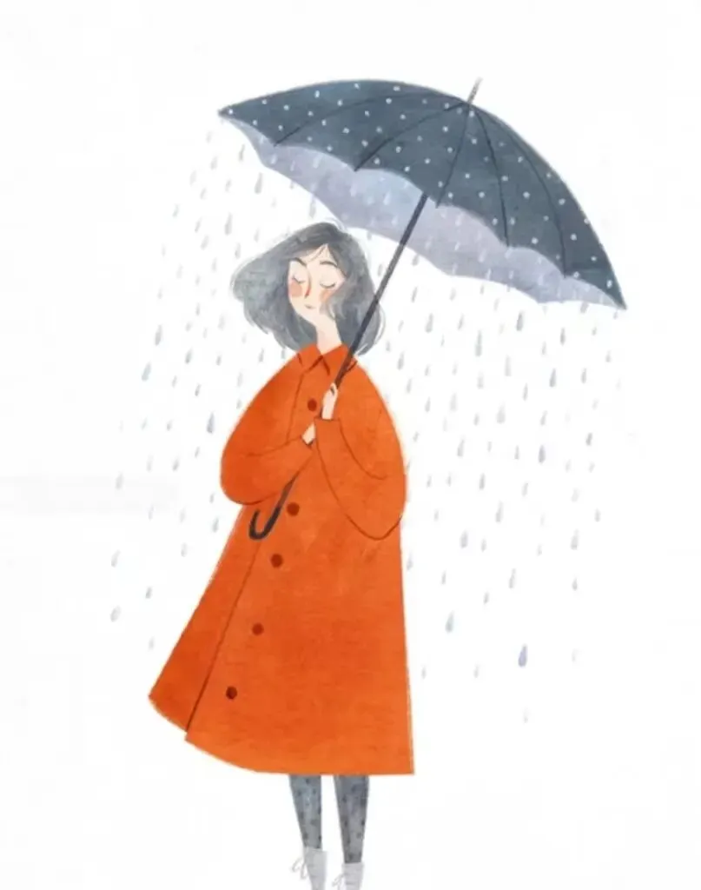

引言：
当地时间6月24日，美国联邦最高法院裁决推翻了1973年以来“罗伊诉韦德案”的决定，取消了宪法对女性堕胎权的保护。由此，堕胎权将回归“州权”，各州间关于堕胎权的冲突亦愈演愈烈——禁止堕胎州已经开始抢先实行堕胎禁令。
美国的堕胎禁令
大体分为三种，包括：
1
“触发法案”（trigger law）——最高院一旦推翻“罗伊诉韦德案”的裁决，通过此法案的州将自动通过禁止堕胎法案；
2
实行于“罗伊案”之前的堕胎禁令；
3
预测了最高院裁决而新近通过的禁令。
美国生育权利中心（The Center for Reproductive Rights）及合作伙伴正竭力防止堕胎禁令在各州的生效。本周他们提起一系列诉讼，旨在阻止路易斯安那州、密西西比州和得克萨斯州的堕胎禁令，此举已暂时减缓了禁令的生效。目前，路易斯安那州和犹他州的“触发法案”，以及德克萨斯州的堕胎禁令都已经处于中止状态，而提供堕胎服务的机构也重新开放。
“路易斯安那州、德克萨斯州和犹他州的法院做出了公正的决定，阻止这些禁令生效。在这样一个历史至暗时刻，这些州的举措对我们来说无疑是一个好消息，”中心的高级律师珍妮·马（Jenny Ma）说，“这样，堕胎的女性还是能够获得基本的医疗保障。”
路易斯安那州和德克萨斯州分别于7月8日和7月12日举行了听证会，讨论禁令是否应该生效。然而，德州同时提交动议，要求暂缓对堕胎禁令的限制。
佛罗里达州限制禁令的生效
生育权利机构另有一项案例显示，6 月 30 日，有一家佛罗里达州的法院宣布将阻止该州的堕胎禁令——原本为期15周的堕胎禁令计划于 7 月 1 日生效。该法院认为禁令违反了佛罗里达州的宪法，因为宪法中包含一个明确的条目——个人隐私权，这其中就包括应属个人的堕胎权。

美国联邦最高法院
取消宪法对女性堕胎权的保护
美国最高院推翻罗伊案的裁决，是由多布斯诉杰克逊女性健康组织案（Dobbs v. Jackson Women’s Health Organization）引起的。此案挑战了密西西比州禁止女性在怀孕15周后进行堕胎手术的禁令，最高院需要对此禁令的合宪性问题进行裁决。最终，有近50年历史的罗伊诉韦德案的判决被推翻，堕胎的立法权也被完全交给各州。
“在罗伊诉韦德案之前，我就开始了医生生涯；但我从来没有想到，国家会回到阻止医生帮助女性的境地，”奥阿拉莫妇女生育服务公司（Alamo Women’s Reproductive Services）的老板艾伦·布莱德（Alan Braid）说道，“堕胎是生育医疗保障的重点，没有人应该被迫跨州去践行最为基本且刻不容缓的医疗保健权。”
6月24日，美国最高法院宣布决定放弃近50年的先例，剥夺宪法规定的堕胎权，为各州禁止堕胎铺平了道路。该裁决是在多布斯诉杰克逊妇女健康组织一案中作出的，该案挑战密西西比州禁止怀孕15周堕胎的法律。该裁决标志着最高法院在历史上首次剥夺了一项基本权利。
自最高法院的裁决以来，许多州都停止了堕胎服务，阿拉巴马州、阿肯色州、俄克拉荷马州、密西西比州、密苏里州和南达科他州禁止堕胎。在其他几个州，由于没有明确的堕胎法律地位，没有提供堕胎护理。由于法院的裁决，预计美国多达一半的州会禁止堕胎。
"我在罗伊诉韦德案之前就开始了我的医学生涯，从未想过我们的国家会回到将医生定罪并阻止我们帮助妇女，"堕胎提供者、圣安东尼奥阿拉莫妇女生殖服务机构的所有者艾伦-布赖德博士说。"堕胎是孕产妇保健的一个标准和必要的部分。没有人应该被迫跨越州界来获得基本的、时间敏感的保健服务"。
诉讼更新：
阻止各州的堕胎禁令执行
美国最高法院6月24日取消了宪法规定的堕胎权后，反堕胎的各州便开始实施堕胎禁令。人权中心及其合作伙伴正在努力阻止这些禁令生效，以保护女性拥有堕胎的机会。
代表堕胎方提起的诉讼正在挑战各州的 "触发 "法律，"罗伊之前 "的堕胎禁令从未被废除，还有其他一些禁止或严格限制堕胎的法律。
本周，路易斯安那州和亚利桑那州的法律被暂时阻止。
美国最高法院的裁决的影响 "是迅速和严重的，许多州的堕胎服务立即停止，"首席执行官南希-诺瑟普（Nancy Northup）说。"我们正看到一场公共卫生危机开始，将吞噬整个国家。我们的当务之急是在每个州尽可能长时间地保留堕胎服务。诊所能够保持开放的每一天和每一小时都是候诊室里病人的胜利。"
中心的高级律师Jenny Ma在评论路易斯安那州允许堕胎服务继续进行的裁决时说："这对路易斯安那州现在需要堕胎护理的人来说是令人难以置信的安慰。该州的堕胎今天可以恢复，而且避免了进一步的不可挽回的伤害。我们的工作还在继续，我们现在期待着周一的听证会，在那里我们将要求法官更永久地阻止这些禁令"。
以下是正在进行的案件的摘要：
南卡罗来纳州：7月13日在南卡罗来纳州法院提起诉讼，要求再次阻止该州禁止怀孕约六周后堕胎的法律。虽然今年早些时候，联邦上诉法院维持了地区法院阻止该法律的裁决，但在美国最高法院撤销了宪法规定的堕胎权后，联邦地区法院批准了州长的紧急动议，暂停禁令，允许禁令生效。诉讼认为，该法律（S.B.1）违反了南卡罗来纳人平等保护的宪法权利，因为它禁止堕胎，对病人的健康没有提供足够保护，并且将性侵犯幸存者获得堕胎的机会作为向执法部门披露个人信息的条件。
路易斯安那州：7月12日，巴吞鲁日的一家州法院阻止了路易斯安那州的触发禁令，允许在该州恢复堕胎服务。法官批准了该中心要求的禁令的临时限制令，并确定于7月18日上午8:30 CT举行听证会，讨论更长期的救济。7月8日，法官确定反对该州触发禁令的案件必须改变场地，从而停止了堕胎护理。在此之前的两天，路易斯安那州最高法院拒绝了该州的请求，允许恢复堕胎，该州法院的裁决暂时阻止了三个州的触发禁令。诉讼认为，该州的触发法是违宪的。
亚利桑那州：7月11日，在7月8日的听证会后，一个联邦地区法院批准了阻止亚利桑那州适用于堕胎的人格法的请求。在2021年8月提交的一个案件中受到挑战的 "人格要求"，将为胎儿、胚胎和受精卵涂上与 "其他人 "相同的 "权利和特权"，以适用于亚利桑那州的所有法律。人格法是该州几个相互冲突的法律之一，包括Roe之前的禁令，加剧了混乱。
北达科他州：7月7日在州法院提起诉讼，阻止该州触发禁令的执行。州总检察长说该禁令于7月28日生效。该案认为，根据《北达科他州宪法》，触发禁令是违宪的，该宪法保障生命权、自由权、安全权和幸福权，所有这些权利都保护堕胎权。
佛罗里达州：佛罗里达州的一家法院于6月30日表示将发布禁令，阻止该州定于7月1日生效的15周堕胎禁令，该州于7月5日对该裁决提出上诉，触发了禁令的自动中止，这使得禁令在案件审理过程中继续生效。该案认为，根据佛罗里达州宪法，该法律（HB5）是违宪的，其中包含了一个明确的条款，即 "禁止堕胎"。
德克萨斯州：德克萨斯州法院提起诉讼，阻止官员执行该州的罗伊之前的堕胎禁令，该禁令曾经完全禁止堕胎，但已被解释为废除。6月28日，法院批准了一项临时限制令，阻止该禁令的执行。7月1日，德克萨斯州最高法院部分批准了州检察长的请求，允许对堕胎禁令进行民事执法。针对该禁令的永久禁令的听证会定于7月12日举行。
密西西比州：6月27日提交的一个案件在州法院挑战密西西比州的触发禁令和六周禁令，认为该州的宪法保护堕胎权。在7月5日的听证会后，密西西比州法院拒绝了阻止禁令生效的请求。
俄克拉荷马州：7月1日向俄克拉荷马州最高法院提起诉讼，要求阻止该州1910年颁布的前罗伊堕胎禁令，以及定于8月生效的全面堕胎禁令。该诉讼声称，刑事堕胎禁令侵犯了俄克拉荷马州宪法规定的个人和身体自主权、健康权和实质性正当程序权。
想要捍卫堕胎权利？
这里有每个人都可以做的七件事
美国联邦最高法院宣布取消对女性堕胎权利的保护。若你想要伸出援手捍卫堕胎权，这里有七件事可以做。从今天起，以下七件事可以作为每个人捍卫堕胎权利的实际行动：
1
向国家堕胎基金会（Abortion Funds）捐款。国家堕胎基金会能够为正在寻求堕胎权利保障的女性提供直接帮助，包括资金支持和实践活动：例如交通、住宿以及语言协同翻译。全国堕胎基金会是保障女性堕胎权利的重要组织。
2
向美国独立堕胎诊所“Keep Our Clinics”捐款。在美国，小型的社区诊所会提供堕胎手术，但可能这些诊所在该州地区属于非法活动。诊所一旦关门歇业，整个社区都无法获得堕胎、生育及性生活健康相关的服务。
3
加入抗议队伍，为堕胎法案发声。你可以通过参与身边的抗议活动或抗议集会发声，美国各地仍在继续举行支持堕胎权利的活动，发现你周围的抗议活动，并亲自参与其中。
4
充分利用网络，扩大语言的影响力。无论是朋友、家人、同事，还是专业人士、社区负责人（只要是你能想到的人），向他们讲述堕胎权对人们生活和未来的重要意义。充分利用你的网络账户，发布自己的相关贴文，或转发带有“堕胎权的重要性（AbortionIsEssential）”的贴文和标签。
5
尽你所能地在所在州学习更多有关堕胎权的法律。点击官网人权中心的互动板块：“罗伊诉韦德案未能通过的后果（What if Roe Fell）”，学习所在州以及其他州的相关法律。了解哪些州支持堕胎，哪些州持反对意见。
6
明确所在州的立法者对堕胎权的立场。你知道你的所在地、所在州以及联邦立法者对堕胎权的态度吗？请打电话或发邮件咨询他们的立场，并敦促其立即行动起来，支持堕胎权，推进堕胎法案通过。
7
通过《妇女健康保护法》（Women's Health Protection Act，WHPA）向国会提议保护堕胎权利。国会有权并应当立即采取行动来保护各州的堕胎权利。尽管美国联邦最高法院推翻了“罗伊诉韦德案”，《妇女健康保护法》也将保护女性堕胎免受各州的堕胎禁令限制。
美国联邦最高法院对多布斯诉杰克逊女性健康组织案（Dobbs v. Jackson Women's Health Organization）的判决将会损害广大寻求堕胎保护的人的权利，特别是那些已经在医疗保障方面遭到歧视性对待的人群——女性、黑人群体、原住民以及其他有色人种、残障人士、农村人士、年轻人、移民、难以维持生计的人员等等。
最高法院大法官斯蒂芬·布雷耶（Breyer）、索尼娅·索托马约尔（Sotomayor）和埃琳娜·卡根（Kagan）在他们的异议中表示：“从今天开始，这一代的年轻女性长大之后，所拥有的权利将会比她们的母亲和祖母那代要少得多.....大多数人甚至拒绝考虑推翻。”罗伊案“和”凯西案“之后，生活会带来什么翻天覆地的变化。这恰恰就是对法案的强力控诉。
原文作者：
Kathleen Flynn， the Center for Reproductive Rights
原文标题：
As States Rush to Enforce Abortion Bans, the Center and Partners Work to Block Them；
Seven Things You Can Do Right Now For Abortion Rights；
State abortion bans lawsuits post roe
原文链接：
https://reproductiverights.org/state-trigger-bans-abortion-bans-blocked/
https://reproductiverights.org/seven-things-you-can-do-right-now-advance-abortion-rights/
https://reproductiverights.org/state-abortion-bans-lawsuits-post-roe/
翻译 I 张拓，赵子萱，叶倩
审校 I 方唐多多 Laurel
排版/封面 I 荆艺
图片来源 I Pinterest